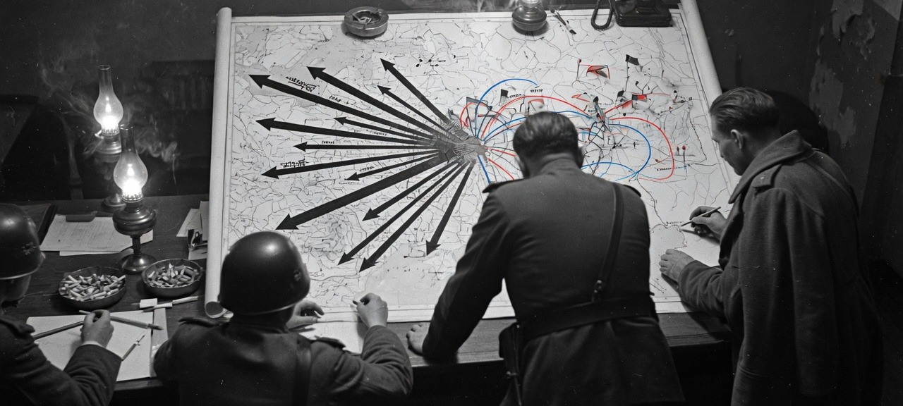

A condensed reading of a Fort Leavenworth text
The missing layer between a fight and a war. Invented in the 1920s, shot in 1937, rebuilt in 1943–45, scared skinny by the bomb, then put back on as a way to win Europe before NATO could go nuclear.
Christopher Donnelly, writing from Sandhurst, gives the Western reader the warning that is the whole book. Until recently the West recognised only tactics and strategy. Soviet thought built a third, intermediate level. More than one Wehrmacht unit commander, Donnelly says, would declare his troops superior, pointing to a fight in which he had beaten a Soviet force three or four times larger. A review of the same campaign shows that while he was winning his tactical victory, the field army of which he was part was being engulfed in a catastrophic operational encirclement “on a scale which the German commanders could not grasp.”
Glantz’s job is to make that scale graspable. One hundred and fifteen force-structure tables. A vocabulary the West keeps mistranslating. A story that runs from the Civil War to Gorbachev without ever becoming a campaign narrative. This is that book, shortened. The diagrams are his ideas, set in type. The photograph is a staff table, because that is where this war was actually invented.
Chapter 01
Svechin’s sentence · 1927
Western armies grew up with two words. Tactics was what you did in the presence of the enemy. Strategy was how you moved the army so that a battle could happen. For Napoleon that was almost enough: one army, one field, a day that decided a dynasty.
The nineteenth century broke the pair. Railways and conscription produced several mass armies. You could wreck a corps and not end the war. Strategic aims now lived or died in the space between a day’s fight and a war’s purpose — a campaign made of many operations, pauses, logistics, and second echelons. The Soviets named that space operational art.
Tactics makes the steps from which operational leaps are assembled; strategy points out the path. A. A. Svechin, Strategy, 1927 — the sentence the rest of the century would quote
An operation, in this language, is not “a big battle.” It is a designed chunk of war in a defined region of a theater — plans, dumps, jumping-off positions, marches, penetrations, envelopments — aimed at an intermediate goal whose achievement changes the strategic picture.
They also ranked the words Westerners muddle. Doctrine (doktrina) is the nation’s officially accepted, scientifically founded views on the nature of modern wars and on what country and army must do to be ready. Two faces: socio-political (the Party) and military-technical (the General Staff). What a U.S. officer calls “doctrine” is, to them, merely operational art and tactics. Military science hunts for laws. Military art is the doing, in three layers: strategy, operational art, tactics. Strategy dominates the lower levels and also depends on them. Operational art is fronts and armies. Tactics is battalions, regiments, divisions, the boi.
A principle that never really leaves the list: simultaneous attack through the enemy’s entire depth. That sentence is the seed of everything that follows.
| Mission | Territory | Typical force |
|---|---|---|
| Strategic aim | Theater of military operations (TVD) | Group of fronts |
| Strategic / operational | Strategic direction | Front (from a military district) |
| Operational mission | Operational direction | Army |
| Tactical mission | The fight you can see | Corps, division, regiment |
Glantz’s Table 3, in English. A front is not a front line. It is a wartime army group, usually stood up from a military district. Mission outranks size: an airborne division can perform a tactical, operational, or strategic task.
Chapter 02
1929 — 1941
Civil War scale made the missing layer obvious. Fronts 700–1,800 km wide; offensives 400–1,000 km against objectives 600–3,000 km deep; tempo 6–10 km a day. Thin forces, cavalry armies, railroad war. Kamenev: victory is the sum of continuous, planned victories, interconnected in time. Tukhachevsky after the Vistula, 1920: you cannot destroy a modern army with one blow.
Industrial backwardness made the first answer slow: successive operations at 5–6 km a day. The 1929 Field Regulation therefore promised deep battle (glubokii boi): infantry-support tanks, long-range tanks, artillery, and aircraft hitting the whole tactical depth at once. Stalin’s Five-Year Plans, at enormous human cost, bought the hardware. By 1936 the promise had grown a floor up. Deep operations (glubokaia operatsiia), under Tukhachevsky and Yegorov: smash the tactical zone, then throw in an “echelon to develop success” — tank, mechanized, cavalry corps — plus air landings, so a hole in a trench line becomes an encirclement in the operational rear.
Plus 3–4 shock armies, 1–2 ordinary armies, 1–2 mobile corps, 15–30 aviation divisions. Guns 40–100 per km, tanks 50–100. Fifteen to twenty days. On paper. Two honest gaps: they barely studied strategic defense, and they barely studied the initial period of war.
First mechanized brigade, May 1930: 60 tanks, 32 tankettes. First mechanized corps, 1931: 490 tanks. By 1936, four such corps and six brigades as operational mobile groups. Airborne brigades existed when almost nobody else’s did. The army grew from 562,000 after demobilization to 1.4 million.
Then Stalin murdered the faculty. Glantz’s compilation: about 35,000 officers, roughly half the corps; 3 of 5 marshals; 13 of 15 army commanders; 57 of 85 corps commanders; 110 of 195 division commanders; all 11 vice-commissars of War; 75 of 80 Supreme Military Council members; about 90 percent of generals, 80 percent of colonels. Tukhachevsky, Yegorov, Uborevich, Blyukher, Yakir, Svechin. Zakharov later: strategy ceased to be taught as a science; deep operations were doubted because Stalin had said nothing about them and their creator was an “enemy of the people”; independent mechanized action in the enemy rear was called sabotage. Theory snapped back toward linear combat.
Spain, the 1939 Polish occupation, Khalkhin-Gol, and the first Finnish offensive then “proved” what frightened men wanted to hear. November 1939: the four tank corps are disbanded. June 1940: the Wehrmacht does to France what the 1936 regulation described. Soviet writers would later say the Germans borrowed it. Glantz reports the claim. What is not a claim is the panic rebuild: 29 mechanized corps of about 1,031 tanks each, to be ready by 1942, T-34s and KVs just entering production — incomplete in June 1941. Actual 1941 armies: 60,000–80,000 men and 400–700 tanks, against theoretical shock armies of 200,000–300,000 and 1,400 tanks. The word glubokaia operatsiia stayed unspeakable.
Chapter 03
June 1941 — November 1942
The German attack was a surprise at all three levels, which Soviet theory had said should not happen. Stalin forbade prudent precautions “for as yet inexplicable reasons.” Glantz does not pretend to explain the motive. Prewar writing had not imagined a fully mobilized enemy hitting land, air, and sea at once. Border cauldrons — Minsk, Smolensk, Kiev, Briansk, Vyazma — swallowed as much as fifty percent of the peacetime army. In six months more than half the trained peacetime strength was gone.
The surviving answer was to shrink the force until mediocre colonels could command it. Rifle corps abolished. Armies became bundles of small divisions and still smaller brigades. Tanks hid in tiny brigades under the High Command — 79 of them by December 1941. About 80 light cavalry divisions tried to be a mobile group on horseflesh. STAVKA was born on 23 June. Stalin sat on it from 8 August.
They learned in public. Shallow one-belt defences were pierced at will. Moscow held because space, weather, and reserve armies existed, not because operational art did. The winter counteroffensive, then Kharkov in May 1942, showed the other vice: Stalin trying to do too much, too soon, on too few trucks.
A reeducation curriculum in four orders. Directive No. 3, 10 January 1942: shock groups, 30 km front / 15 km army penetration sectors, so artillery can actually stack. Order 306, October 1942: single-echelon from company to division, about 80 percent of combat power in the first line — you can break in; you cannot stay. Order 325, 16 October 1942: tank and mechanized corps used as wholes, not dribbled away. By December: 2 tank armies, 24 tank corps, 8 mechanized corps. Stalingrad in November is not yet mature operational art. It is the first time the rebuilt tools, the rebuilt staffs, and a German overextension coincide.
Chapter 04
1943 — 1945
Glantz’s school metaphor: 1941–42 elementary, 1943 secondary, 1944–45 university. 1943 is the year they refuse a preemptive offensive at Kursk and instead build a defence more than a hundred kilometres deep, with a deception plan, and then attack. That choice is as important as any tank. It means the rest of the war can be offensive.
Rifle corps come back as the missing rungs: 34 headquarters on 1 January 1943, 150 on 1 December. The tank army is redesigned as a fully mechanized front mobile group — two tank corps and a mechanized corps, 700-plus tanks on paper, 450–600 in practice. Five such armies by summer. Artillery and air become offensives in their own right, phased through the tactical zone into the operational depth. Forward detachments — tank-heavy, hours ahead — grab the river and the junction so the main body never has to fight a tidy German second position.
Encirclement grows a grammar: inner ring to kill the pocket, outer ring that does not sit and wait. By Bagration and Iassy-Kishinev the outer ring is the next operation. 1944 is successive strategic offensives; 1945 is simultaneous ones. Groups of fronts: 100–200 divisions, up to 2.5 million men, 20–40,000 guns, 3–6,000 tanks, 2–7,500 aircraft. Depths 500–600 km. Rifle 20–30 km a day; armour 50–60, sometimes 100. Tank armies four hundred kilometres. Densities 200–250 guns and 70–85 tanks per kilometre. Superiorities 3–5:1 in men, 6–8:1 in tanks and artillery.
Manchuria, August 1945: 4,400 km, single-echelon fronts, forward detachments wrecking defences that have not formed. The laboratory of the initial period of war. Two shadows stay on the triumph. Rifle divisions on the Oder may have 3,500–4,500 men against an 11,700-man table of organization; firepower and attachments carry them. And there is no armoured personnel carrier, so “mechanized infantry” still rides on tanks and Lend-Lease trucks. Glantz notes the Russian words Studebaker and Willies, and the habit of not saying why.
The 1944 Field Regulation describes deep operations without uttering the names of the dead men who wrote them. For Soviet officers after the late 1960s, this third period is West Point. For the West it was the “unknown war.”
Chapter 05
1946 — 1968
Victory plus ruin. Demobilization: more than 6 million men and more than 500 divisions down to fewer than 3 million and about 180 divisions. Tank armies become mechanized armies with more infantry. Cavalry finally goes. Stalin races the bomb while talking as if no single weapon mattered. Atomic device 1949, thermonuclear 1953. The open literature genuflects to “permanent operating factors.” The force structure does not forget how to encircle.
Stalin’s death unfreezes the tongue. Zhukov thins the herds into tank armies and motorized rifle divisions that might live on a nuclear field. Then Khrushchev, having beaten Malenkov, adopts Malenkov’s conclusion: the Revolution in Military Affairs. Armed forces: 5.76 million (1955) to 3.6 million (1958) to 2.5 million. Strategic Rocket Forces, 1960, “main and decisive means.” Ground forces lose independent-command status in 1964, regain it in 1967.
Nuclear weapons can achieve strategic results independently of operations and battles. Strokov, 1966 — operational art as a junior partner, surviving honestly only in “local” wars
Sokolovsky’s 1962 Military Strategy is the period’s poster. Multi-megaton strikes are the method of war. Ground forces exploit the craters, occupy, mop up. No more “gnawing through.” Nuclear weapons blow holes; columns thread them in pre-combat formation; you concentrate at the last hour so you are not a parking lot for someone else’s warhead. A 1968 front is drawn 400 km wide with a final mission 800 km away — a planning wish, not a measured fact. Strategic-scale defence is declared illegitimate. The Great Patriotic War, as a teacher, is quietly suspected of irrelevance. A system that believed in laws of war had just been told the laws were optional if the opening salvo was large enough.
Chapter 06
1968 — 1990
From the mid-1960s the junior partner starts talking again. The dead theorists are reprinted. Zakharov, 1970: deep-operations theory “has not lost its significance today.” By 1979 Kulikov can say conventional operations “retain their importance.” Divisions rebound: about 150 in 1968, about 220 in 1987.
The intellectual trick is one they like: keep the nuclear-era need for speed and dispersion; bring back 1944–45’s mobile groups and forward detachments. The synthesis is anti-nuclear manoeuvre. Go so fast, on so many axes, so mixed up with his troops, that he cannot find a clean nuclear — later, precision-missile — target, and cannot get permission in time anyway. High tempo is not dash for its own sake. It is a weapon against his decision.
That is what the OMG is for — the old front mobile group under a new set of initials — and what forward detachments are for at every lower rung. Fat second echelons look like gifts to Lance and then to ATACMS. Better to put the weight forward. Missions stop being lines on a map and become deep objects whose loss makes the defence incoherent. Reznichenko adds an air echelon to the ground echelon and, with a straight face, sets Soviet land-air battle next to U.S. AirLand Battle.
| 1987 front, three cases | Unprepared | Partial | Prepared |
|---|---|---|---|
| Immediate / final (km) | 350 / 800 | 300 / 700 | 250 / 600 |
| Army immediate / subsequent | 150 / 350 | 120 / 300 | 100 / 250 |
| MRD immediate / subsequent | 30 / 70 | 25 / 50 | 20 / 50 |
Planning norms, not promises. Against a thin covering force the OMG of one or two tank armies can go in on days 1–3, even in the first echelon. Air assault 80–100 km. Spetsnaz already in the rear. Experimental tank/mechanized corps as OMG: 350–450 tanks. A tank army configured as OMG: 1,000–1,400.
Glantz, writing as Gorbachev talks “defensiveness” and “reasonable sufficiency,” is polite and unconvinced. Prevention of nuclear war is real policy. A conversion of operational art to defence would show up in military science and in tables of organization. Watch those. Semantics are not conversion.
Chapter 07
A method, not a prediction
Glantz’s last chapter is a 1990 forecast that still teaches, because it is a method. They will keep studying 1944–45 because they study war when they cannot practice it. They will add air and then space to “depth.” They will try to hide mobilization. They will stockpile forward. They will try to make every battalion able to do what only a tank army could do in 1944: live mixed into the enemy, on a raid, at night, with its own air slice.
The friend who is not a staff officer needs one last distinction. Tactics is the fight you can see. Strategy is the war the government thinks it is in. Operational art is the grim craft of making a week of fights, a hundred kilometres of depth, and a logistics plan add up to a political fact — a destroyed army group, a seized TVD, a NATO nuclear decision that never gets made. The Soviets pursued that craft longer, more formally, and through more self-inflicted catastrophes than anyone else. The pursuit is the book.
If you remember six things from Glantz, remember these.
One. They added a floor to war. Strategy is the war; tactics is the fight; operational art is the campaign that makes fights add up. Svechin’s steps, leaps, and path.
Two. Deep operations is one idea: hit the whole depth at once, then shove a mobile group through the hole until an army group is a pocket. Invented around 1936, shot in 1937, rebuilt in 1943–45, renamed OMG in the 1980s.
Three. 1941 was not “Asiatic hordes versus genius.” It was a beheaded officer corps, a half-rebuilt tank force, and a state that had forbidden its own army to get ready. Half the peacetime army was gone before the theory could get back on its feet.
Four. 1944–45 is their West Point. Bagration, Vistula-Oder, Manchuria: deception, successive operations, inner and outer rings, forward detachments. If a Soviet general is quoting a war, it is probably this one — not 1941.
Five. Nukes did not abolish campaigns. They scared them skinny, then the campaigns came back wearing nuclear-scared clothing. The 1980s point was to win a TVD so fast, so mixed up with NATO, that no one could find a sane nuclear release.
Six. Do not confuse a press conference with a formation diagram. “Defensive doctrine” is the political face. Glantz’s test still works: watch how they array fronts, armies, and manoeuvre groups. Donnelly’s German colonel won his fight. His army drowned in a pocket he could not imagine.